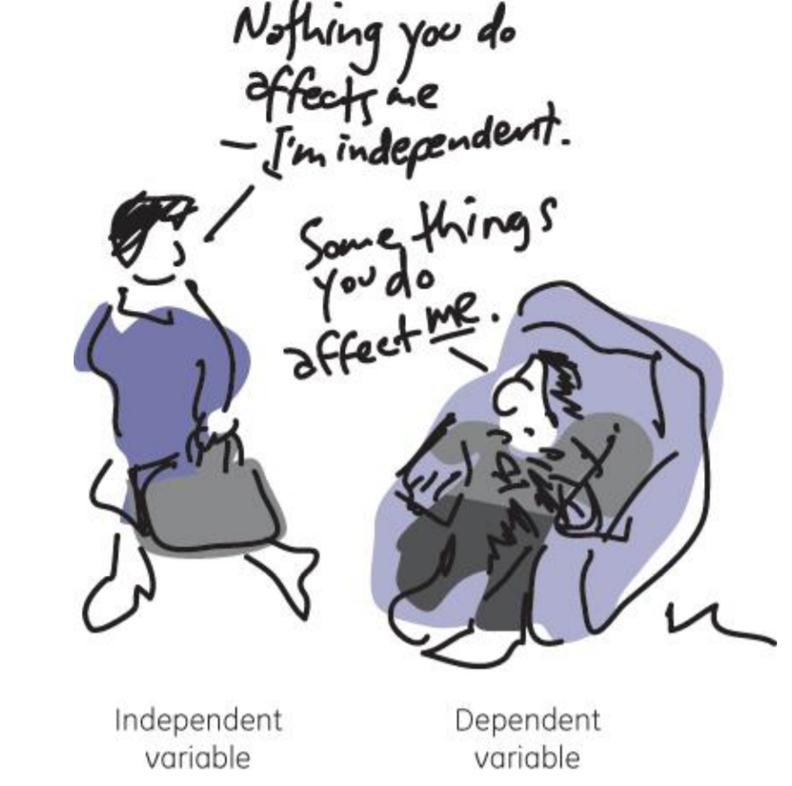
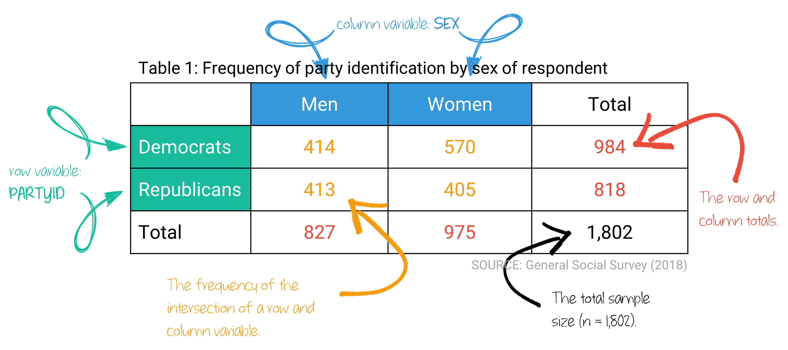
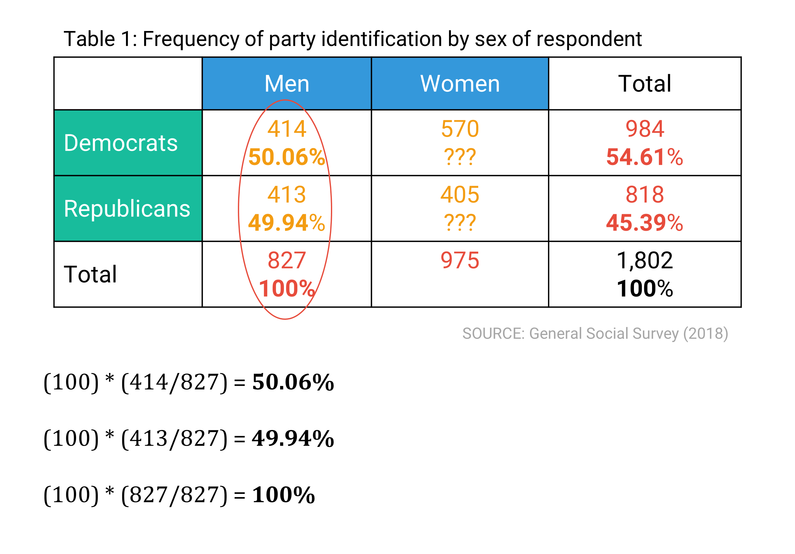
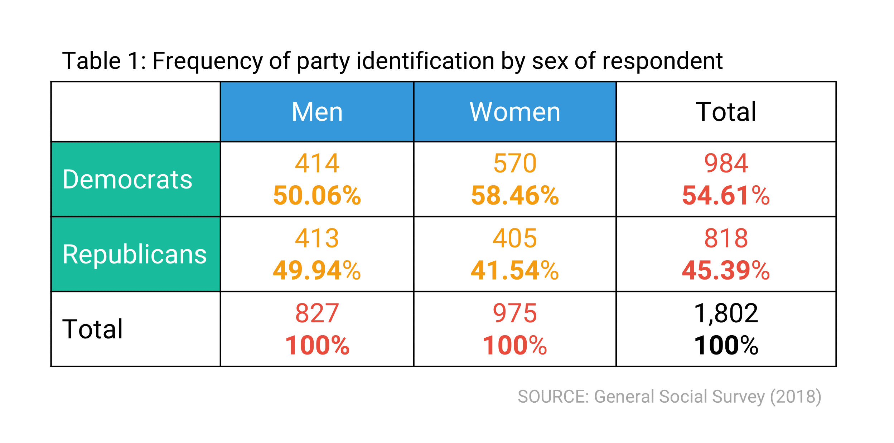
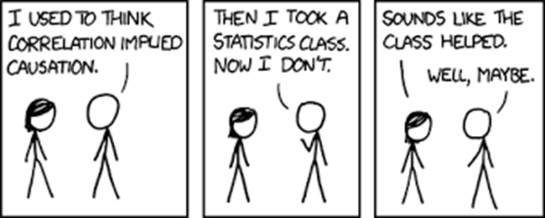
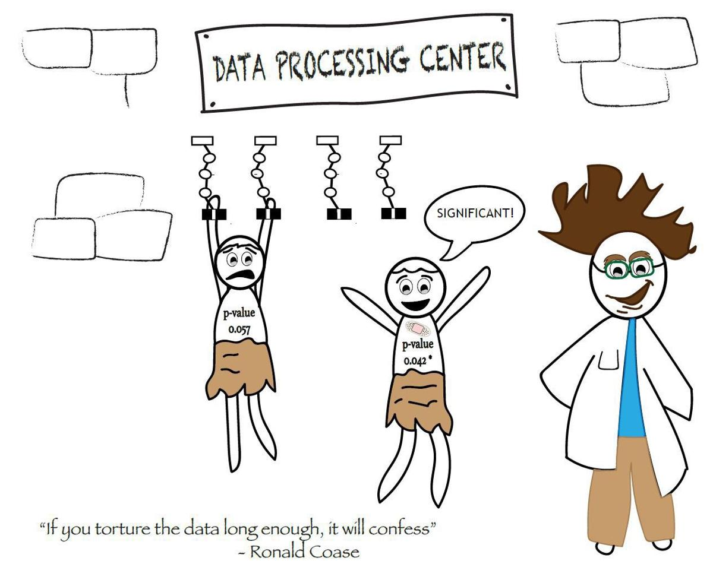

Associations
LEARNING OBJECTIVES
- Evaluate and interpret claims of statistical significance.
- Identify independent and dependent variables and examine their relationship using bivariate tables.
- Calculate and interpret the significance of a chi-square test statistic and Pearson’s Correlation Coefficient (R).
READINGS
Readings are available on Quercus.
- Cohen, Philip N. 2025. “Doing Description.” Pp. 43–79 in Citizen
Scholar: Public Engagement for Social Scientists. New York:
Columbia University Press.
- Wasserstein, Ronald L., and Nicole A. Lazar. 2016. “The ASA’s Statement on p-Values: Context, Process, and Purpose.” The American Statistician 70(2):129–33. doi:10.1080/00031305.2016.1154108.
TERMS
- DEPENDENT VARIABLE
- INDEPENDENT VARIABLE
- HYPOTHESIS STATEMENT
- BIVARIATE ANALYSIS
- CROSS-TABULATION
- POSITIVE RELATIONSHIP
- NEGATIVE RELATIONSHIP
- CORRELATION
- CAUSATION
- STATISTICAL SIGNIFICANCE
- STATISTICAL INDEPENDENCE
- STATISTICAL DEPENDENCE
- CHI-SQUARE TEST
- OBSERVED FREQUENCIES
- EXPECTED FREQUENCIES
- DEGREES OF FREEDOM
Bivariate Analysis

Researchers generally have a belief about how two variables are related to one another, which is what establishes one variable as a dependent variable and the other as an independent variable.
Bivariate Analysis
A statistical method designed to detect and describe the relationship between the independent and dependent variable.
The statement establishing how the researcher thinks the variables are associated with one another is the hypothesis statement.
Example:
If you are testing whether eating chocolate for breakfast affects a person’s happiness during the day, which is the independent variable and which is the dependent?
To figure it out, try writing the question in the form of an “If/Then” statement.
- If (I do this), then (this will happen).
- If (Independent Variable), then (Dependent Variable).
IF a person (eats chocolate for breakfast), THEN they will be (happy) during the day.
The independent variable is ‘eating chocolate’ (or not) and the dependent variable is ‘happiness.’ Happiness depends on whether a person ate chocolate for breakfast.
Identifying the independent and dependent variable is not always straightforward in a hypothesis statement. For example, the variables age and health are related. Many variations of hypotheses could be written that contain both variables:
- \(H_{1}\): As age increases, health declines.
- \(H_{1}\): As individuals age, their health declines.
- \(H_{1}\): Health gets worse with age.
- \(H_{1}\): Age is negatively associated with health.
- \(H_{1}\): Older Americans are in poorer health than younger Americans.
How do you identify which is the independent variable and which is the dependent variable? Try stating the relationship in both directions:
“Age affects health.” or “Health affects age.”
It doesn’t make sense to say that health affects age. People age, no matter their health status. But, how old you are likely influences your health. So, health might be dependent on age, making health our dependent variable and age the independent variable.
If I drink Mountain Dew before bed, then I will not sleep very much.
If I leave all the lights on all day, then my electric bill will be expensive.
Spending time on Instagram increases risk of depression.
Cross-tabs
One method for displaying the relationship between two variables, also known as a bivariate analysis, is a cross-tabulation (a.k.a. a cross-tab) table.
It draws upon our knowledge of independent and dependent variables to describe how two variables are related to one another.
Cross-tabulation
Two variables organized in a table.
A cross-tabulation table shows the distribution of one variable across the categories of another variable.
- The categories of the independent variable are usually shown in the columns.
- The categories of the dependent variable are usually shown in the rows.
- The cell values show the intersection of a row and column.
- The tables also typically include marginals, the row and column totals.

Making comparisons
As you (hopefully) remember, we must convert frequencies into percentages in order to compare relationships. To calculate the percentages within each category of the independent variable typically means calculating the percentages down the table.

Interpretation
Once we have the percentages within each category of the independent variable, we interpret the table by comparing across categories of the independent variable.

There are three key properties of interpreting a bivariate relationship:
1. Existence: Does there appear to be a relationship (correlation) at all?
If the percentages across the independent variable categories are not equal (or not close to equal), we suspect a relationship between the two variables. We will formally test for such a relationship, with a chi-square test, later on.
In our example, we could say:
58.46% of women identified as Democrats, compared with 50.06% of men. Therefore, it appears that women are more likely than men to identify as Democrats.
Here, we’ve established the existence of a relationship between the two variables. The percentage of women and men who are Democrats are not equal to one another. If the same percentage of women and men identified as Democrats, there would be no relationship between political party identity and gender. We found a difference. Therefore, we move on to the next property.
2. Strength: How strong is the relationship?
If we suspect there is a relationship, we next evaluate how strong the relationship might be. A quick method is to examine the percentage difference across the categories of the independent variable. The larger the percentage difference across the categories, the stronger the association.
We rarely see either a 0% or a 100% difference. When knowing the category of the independent variable helps us guess the category of the dependent variable, the relationship is strong. In this example, knowing if someone is a woman or a man helps us guess their political party identification.
In our example, we could say:
There is a 8.4% difference in the percentage of men and women who identify as Democrats.
We would say this is a moderately strong relationship. Knowing if someone is a man or a women makes us better able to guess whether they identify as a Democrat or not. If the percentage difference between the two was small, we wouldn’t be better off guessing someone’s political identity by knowing their gender, and the relationship would be considered weak.
3. Direction: What is the direction of the relationship?
For ordinal or interval-ratio level variables, we also describe the direction of the relationship between the two variables.
Positive Relationship
The variables vary in the same direction.
Example:
As the number of weekly exercises someone does increases, muscle strength increases.
Negative Relationship
The variables vary in opposite directions.
Example:
As the number of weekly exercises someone does increases, depressive symptoms decrease.
Heads up!
Findings should be phrased to make clear what is positively/negatively associated.
Example:
It is better to state:
“Being a Democrat is positively associated with supporting healthcare reform”
than the less clear:
“Political party is positively associated with opinion of healthcare reform.”
Correlation and causation

Measuring data can be tricky. So can interpreting data. Scientists have a common phrase used to bemoan the difficulty of interpreting the relationship between variables:
Correlation is not causation.
To understand what this cautionary phrase means, we have to differentiate between correlation and causation.
Correlation
Two actions or occurrences that tend to happen together, but one does not necessarily cause the other to occur.
We usually say these things are associated.
Example:
The more fire trucks there are at a fire, the greater the damage.
The presence of many fire trucks did not cause the fire damage. But, a lot of fire trucks at a fire usually signals there was a lot of damage.
Causation
One event is the result of the occurrence of the other event.
Three conditions of causation:
- The cause must precede the effect in time
- There has to be an empirical relationship between cause and
effect
- This relationship cannot be explained by other factors
Example:
Those who study longer get higher grades.
- Studying happened before the grade.
- Studying and grades are related.
- There is not another reason that would account for the association between the two variables.
There can be other factors involved, but nothing that would explain away the relationship between these two variables.
Heads up!
Social sciences usually demonstrate a correlation, not causation, between two variables (although that is not always the case).
Statistical significance
Statistical Independence
The absence of association between two cross-tabulated variables.
A relationship between two variables (a correlation) is indicated by statistical dependence, and the absence of a relationship is indicated by statistical independence.
When the percentage distribution of the dependent variable within categories of the independent variable are different enough that it is unlikely to have occurred by chance, we can say that there is an association between the two variables. The likelihood of being in any given category of the dependent variable is dependent upon the category of the independent variable.
If the percentage distributions of the dependent variable within each category of the independent variable are (nearly) identical, we can say that there is no association between the two variables. When the two variables are unrelated, the variables are statistically independent.
When we show with statistics that there is a relationship between two variables, we say that the findings are “statistically significant.” But, what does that exactly mean?
Significance vs. importance
A common and easy misperception regarding statistical significance is that it does not reveal whether the difference is significantly meaningful. Statistical significance simply refers to the likelihood that there is an actual difference between two groups, rather than due to chance.
Research that results in statistical tests with a p-value greater than .05 often don’t get published. This arbitrary threshold often determines whether or not a study’s findings are determined to be important, even though p-values are not actually measures of substantive importance.
Thus, researchers are incentivized to find a p-value less than .05 in order to publish their findings. As you’ve seen so far, a number of factors influence the calculated test statistic, and ultimately the p-value obtained. The size of the sample, the level of measurement, the comparison group, the introduction of a control variable, and so on, all matter in determining a p-value.
These purposeful data manipulations can result in many false positives, meaning a difference really doesn’t exist and future researchers won’t be able to replicate the findings. These efforts to manipulate the data in a way that favors rejecting the null hypothesis is commonly referred to as p-hacking, an unethical attempt to exploit the data to find a result that does not really exist.
